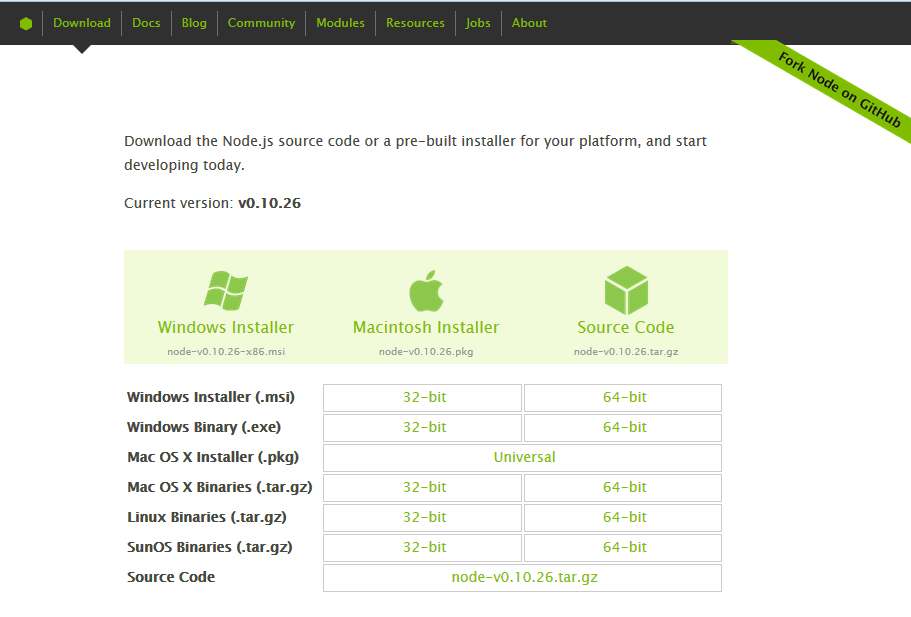
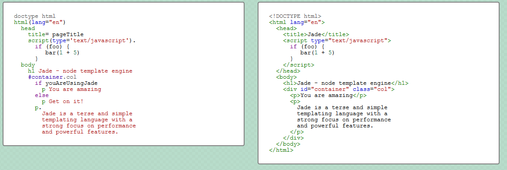

<!DOCTYPE html><html><head><meta charset="utf-8"><meta name="viewport" content="width=device-width, initial-scale=1, maximum-scale=1"><title>TKPPL | Presentasi dengan Bespoke.JS</title><link rel="stylesheet" type="text/css" href="bower_components/prism/themes/prism.css"><link rel="stylesheet" type="text/css" href="bower_components/todc-bootstrap-main/dist/css/bootstrap.min.css"><link rel="stylesheet" type="text/css" href="styles/main-presentation.css"></head><body></body></html><nav role="navigation" class="navbar navbar-default"><div class="container"><div class="navbar-header"><button type="button" data-toggle="collapse" data-target="presentation-chooser" class="navbar-toggle"><span class="sr-only"></span><span class="icon-bar"></span><span class="icon-bar"></span><span class="icon-bar"></span></button><a href="index.html" class="navbar-brand">Teknologi Kolaborasi</a></div><div id="presentation-chooser" class="collapse navbar-collapse"><ul class="nav navbar-nav"><li class="dropdown"><a data-toggle="dropdown" href="#" class="dropdown-toggle">Pilih Presentasi <b class="caret"></b></a><ul class="dropdown-menu"><li><a href="1-Introduction.html">Pengenalan Kuliah</a></li><li><a href="2-TeknologiKolaborasi.html">Teknologi Kolaborasi</a></li><li><a href="3-PresentasiDenganBespokeJS.html">Presentasi dengan Bespoke.JS</a></li><li><a href="4-SCRUM.html">SCRUM</a></li><li><a href="5-UserStories.html">User Stories</a></li><li><a href="6-Trello.html">Trello dan Bug Reporting</a></li><li><a href="7-PengenalanKontrolVersi.html">Kontrol Versi</a></li><li><a href="8-DasarKontrolVersi.html">Dasar Kontrol Versi</a></li><li><a href="9-Commit.html">Commit</a></li><li><a href="10-LogDanHistory.html">Log dan History</a></li><li><a href="6-TugasBeSpoke.html">Tugas Be Spoke</a></li><li><a href="11-TimeMachine.html">Time Machine</a></li><li><a href="12-PushDanPull.html">Push dan Pull</a></li><li><a href="13-Branching.html">Branching (Percabangan)</a></li><li><a href="14-GitFlow.html">GitFlow Workflow</a></li></ul></li></ul></div></div></nav><article id="presentation"><section><h1>Presentasi dengan Bespoke.JS</h1><p>Teknologi Kolaborasi Pengembangan Perangkat Lunak</p></section><section><h2 class="bullet">Tujuan Pembelajaran</h2><hr><ul><li>Persiapan tugas proyek</li><li>Membuat presentasi yang baik</li><li>Sampel pengenalan teknologi kolaborasi dan penggunaannya</li></ul></section><section><h2 class="bullet">Perangkat Lunak Prasyarat</h2><hr><ul><li><a href="http://nodejs.org/">Node.js</a></li></ul></section><section><h2>Pengenalan Singkat Node.js</h2><blockquote>Node.js merupakan sebuah <strong>platform</strong> yang dibangun di atas
<a href="http://code.google.com/p/v8/">lingkungan eksekusi Javascript milik Chrome</a>
untuk memudahkan dalam pengembangan aplikasi jaringan yang cepat dan berskala besar.
<small>Website resmi Node.js</small>
</blockquote></section><section><h2 class="bullet">Node.js...</h2><hr><ul><li>... dirancang untuk menjalankan aplikasi javascript</li><li>... bukan hanya aplikasi server, tetapi juga aplikasi client</li><li>... berjalan di Windows, OS X, Linux, Solaris, *BSD, dll</li></ul></section><section><h2 class="bullet">Installasi Node.js</h2><hr><ul><li>Unduh installer Node.js di <a href="https://github.com/markdalgleish/bespoke.js">website resminya.</a></li><li>Pilih sesuai dengan yang OS kalian. </li><li>Install di komputer.</li></ul></section><section><h2 class="bullet">npm (node package manager)</h2><hr><ul><li>perangkat lunak manajemen paket untuk Node.js</li><li>memudahkan dalam <strong>menerbitkan</strong> dan menggunakan paket</li><li>mengurangi ketergantungan (<em>dependency</em>) dan konflik antar versi paket</li><li>mudah digunakan dan sederhana</li><li>dipaketkan dengan Node.js</li></ul></section><section> <h2>cara penggunaan npm</h2><code class="language-bash"><pre>npm install [nama-paket]</pre></code><p>instalasi semua paket Node.js dilakukan seperti ini</p></section><section><h2>Instalasi Grunt.js</h2><code class="language-bash"><pre>npm install -g grunt-cli
</pre></code></section><section><h2 class="bullet">Bespoke.JS</h2><hr><ul><li>pustaka untuk membuat presentasi dengan teknologi web</li><li>sangat kecil dan sederhana</li><li>modular dan mudah digunakan</li></ul></section><section><h2>Bespoke.JS</h2><p>Karena menggunakan teknologi web, kita harus menguasai 
HTML/CSS/JS terlebih dahulu (duh).
</p></section><section><h2>Demo Penggunaan Bespoke.JS</h2></section><section><h2 class="bullet">Membuat Presentasi Bespoke.JS</h2><hr><ol><li>Ambil kode <a href="https://raw.github.com/markdalgleish/bespoke.js/master/dist/bespoke.min.js">Bespoke.JS</a></li><li>Buat file HTML, masukkan kode Bespoke.JS</li><li>Buat file javascript yang menghubungkan Bespoke.JS dengan HTML</li><li>Buat file CSS, masukkan kelas-kelas Bespoke.JS</li><li>Buat slide sesuai dengan aturan HTML dan CSS Bespoke.JS</li></ol></section><section><h2>Ribet :(</h2><p>bisa lebih sederhana dengan generator-bespoke</p></section><section><h2>generator-bespoke</h2><code class="language-bash"><pre>npm install -g generator-bespoke
mkdir presentasi
cd presentasi
npm install -g yo
yo bespoke
</pre></code></section><section><h2>generator-bespoke (run)</h2><code class="language-bash"><pre>grunt server # akses di localhost:8000
</pre></code></section><section><h2 class="bullet">Jade</h2><hr><ul><li><em>Template Engine</em> untuk Node.js</li><li>menyederhanakan penulisan HTML</li><li><a href="http://jade-lang.com/">coba langsung</a></li></ul></section><section><h2 class="bullet">Jade Example</h2></section><section><h2 class="bullet">Stylus Example</h2><h3>Normal CSS</h3><code class="language-css"><pre>body {
 font: 12px Helvetica, Arial, sans-serif;
}

a.button {
 -webkit-border-radius: 5px;
 -moz-border-radius: 5px;
 border-radius: 5px;
}</pre></code></section><section><h2 class="bullet">Stylus Example 2</h2><h3>Stylus</h3><code class="language-css"><pre>border-radius()
 -webkit-border-radius arguments
 -moz-border-radius arguments
 border-radius arguments
 
body
 font 12px Helvetica, Arial, sans-serif
 
a.button
 border-radius 5px
 </pre></code></section><section><h2>Demo Penggunaan Bespoke.JS</h2><p>(dengan generator-bespoke)</p></section><section><h2 class="bullet">Membuat Presentasi Bespoke.JS </h2><h3>(dengan generator-bespoke)</h3><hr><ol><li>instalasi dan jalankan</li><li>tambahkan slide dengan kode jade (<code class="inline">index.jade</code>)</li><li>ubah tampilan dengan kode stylus (<code class="inline">styles/main.sty</code>)</li></ol></section></article><script src="bower_components/bespoke.js/dist/bespoke.min.js"></script><script src="bower_components/bespoke-bullets/dist/bespoke-bullets.min.js"></script><script src="bower_components/bespoke-scale/dist/bespoke-scale.min.js"></script><script src="bower_components/bespoke-hash/dist/bespoke-hash.min.js"></script><script src="bower_components/bespoke-progress/dist/bespoke-progress.min.js"></script><script src="bower_components/bespoke-state/dist/bespoke-state.min.js"></script><script src="bower_components/prism/prism.js"></script><script src="bower_components/prism/components/prism-bash.min.js"></script><script src="scripts/main.js"></script><script src="bower_components/jquery/jquery.min.js"></script><script src="bower_components/todc-bootstrap-main/dist/js/bootstrap.min.js"></script>